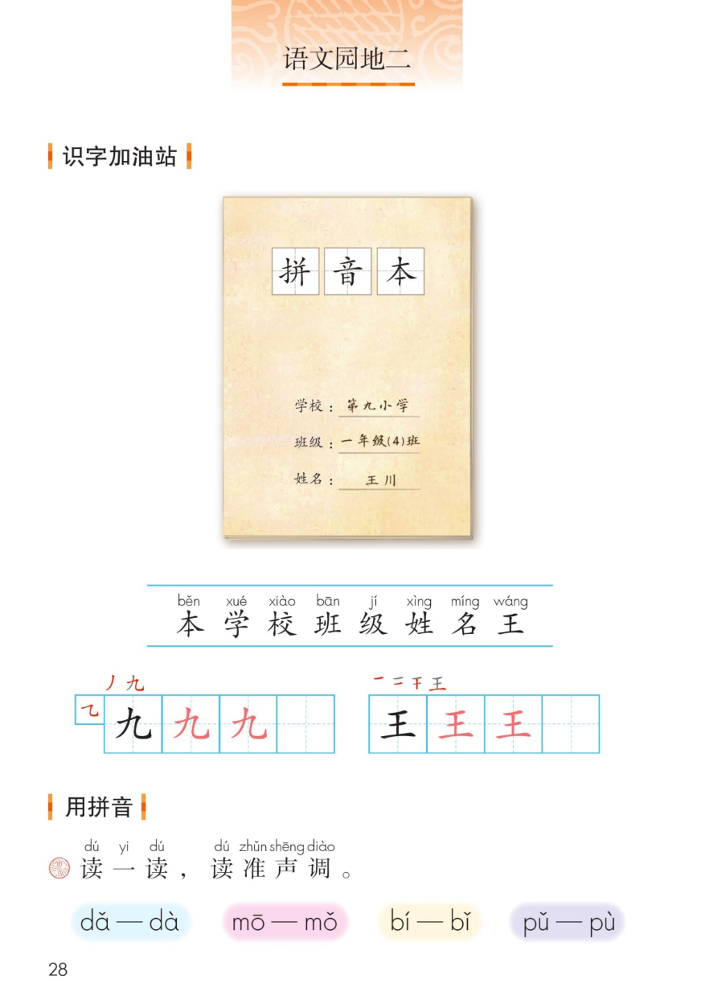
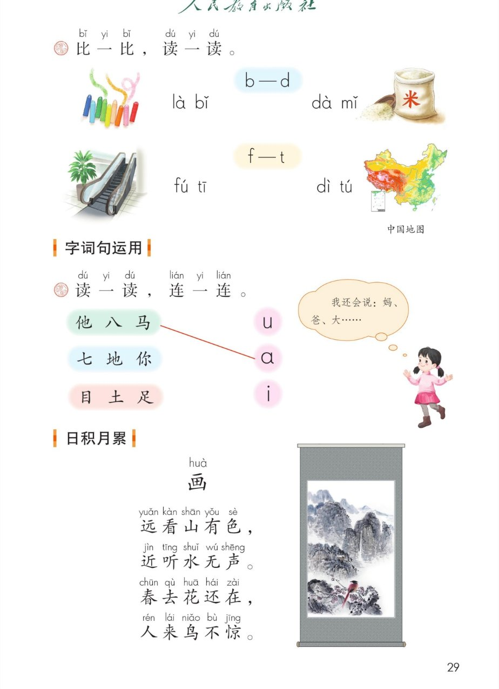
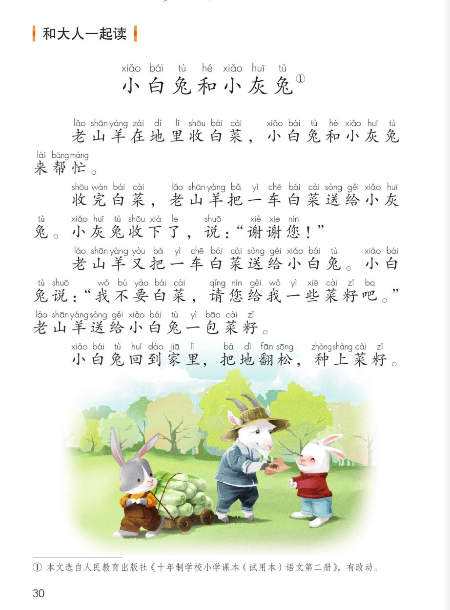
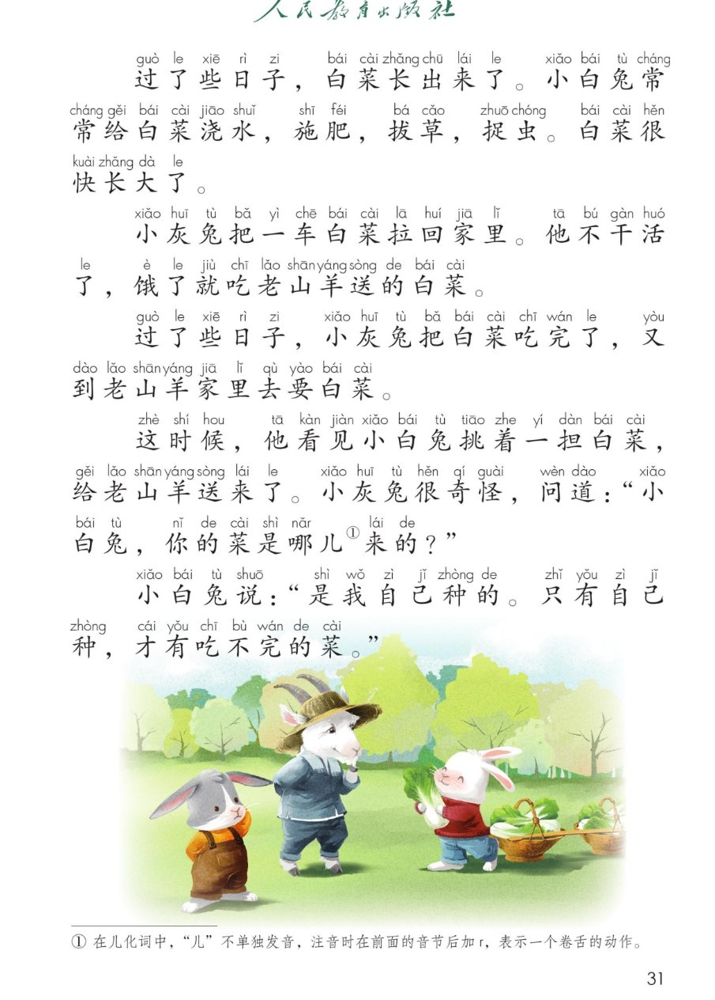

×
🔊 手机听不到声音怎么办？
① 先把手机
媒体音量调大 ，确认没开静音、没连蓝牙耳机；在微信里打开的，点右上角「⋯ → 用浏览器打开」。
② 还是没声音？到应用商店免费下载
Microsoft Edge 浏览器 （它自带朗读发声），用它打开本页面就能出声。
③ 换了 Edge 仍然没声音，说明这部手机的
硬件/系统不支持 网页朗读（多为老旧机型）；近几年买的新手机一般都能正常播放。
→ 打开声音自检
统编版 · 一年级上册 · 第二单元 · 语文园地二
语文园地二
识字加油站 · 用拼音 · 字词句运用 · 日积月累《画》· 和大人一起读
会认 7 字 会写 2 字 读准声调 闯关 8 题
这个园地学什么： 认识拼音本上的 7 个字，写好「九、王」；用拼音读准声调、分清 b—d 和 f—t；
把字和韵母连一连；背一背古诗《画》；再和大人一起读故事《小白兔和小灰兔》。
课本第 28 页 点字卡听读音和组词
看拼音本封面： 要写清学校、班级、姓名 三样——王川是一年级（4）班的小朋友。📕
课本第 28 页田字格 先看笔顺，再动笔
课本第 28 页 点卡片对比读
读一读，读准声调
每张卡两个调子，读出不同的声调 ：一声平，二声扬，三声拐弯，四声降。
课本第 29 页
怎么分： b 右下半圆、d 左下半圆；f 伞柄朝上、t 伞柄朝下。看清形状再拼。👀
课本第 29 页 点卡片看答案
我还会说： 带 a 的「妈、爸、大」，带 i 的「七、地、你」，带 u 的「目、土、足」——你也来找找看。💬
课本第 29 页 点一行读一行
《画huà 》
远看kàn 山shān 有色sè ，
近听tīng 水shuǐ 无声shēng 。
春去qù 花huā 还在zài ，
人来lái 鸟niǎo 不惊jīng 。
🎵 全诗连读
诗意小卡
远看高山有颜色，近听却听不到水声；春天过去花还开着，人走近鸟也不飞——谜底就是一幅画 ！🖼️
💡 这是一首谜语诗 ，每句都在说画的特点：有色、无声、花常开、鸟不惊。
课本第 30~31 页 点一段读一段，再和大人轮流读
🎵 全文连读
想一想： 小白兔自己种菜，才有吃不完的菜——自己动手，才有收获 。和大人说说你帮家里做过什么活。🌱
点题目可以听题，点选项就判对错，答完自动算分
已经答 0 题，答对 0 题。
点图放大

第 28 页 · 识字加油站 · 用拼音

第 29 页 · 比一比 · 字词句运用 · 日积月累

第 30 页 · 小白兔和小灰兔（一）

第 31 页 · 小白兔和小灰兔（二）